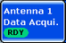

Training Data Acquisition
Like any other measurement, the training data acquisition is controlled using the [ON | OFF] or [RESTART | STOP] keys. The context (for the selected TX antenna) is set via the following softkey:

Sets the focus of the [ON | OFF] or [RESTART | STOP] keys to the training mode view and activates the training mode hotkeys.
Remote command: